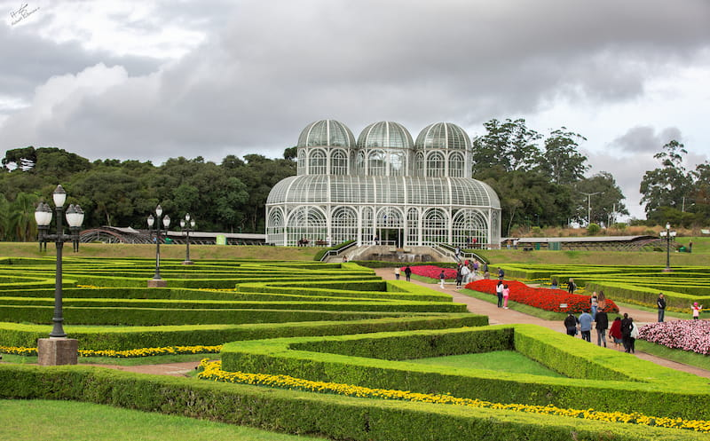

Curitiba é a mistura perfeita entre planejamento urbano inteligente, sustentabilidade e belas áreas verdes, sendo reconhecida como uma das capitais mais organizadas do país

Um lugar inesquecível, onde o inverno costuma visitar o verão, famoso por seus parques, capivaras e ruas limpas
=======Curitiba é a mistura perfeita entre planejamento urbano inteligente, sustentabilidade e belas áreas verdes, sendo reconhecida como uma das capitais mais organizadas do país
Um lugar inesquecível, onde o inverno costuma visitar o verão, famoso por seus parques, capivaras e ruas limpas
>>>>>>> cc442d5 (HTML de primeira aula)